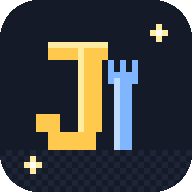

JamesWorks패치노트
업데이트 기록이에요. 최신 내용이 맨 위에 있어요.
사이트 공지 2026년 11월 15일
- 새 주소 jamesworks.kr로 옮겼어요. 오르락내리락은 jamesworks.kr/Orak에서 할 수 있어요.
- 게임 가이드, 자주 묻는 질문, 패치노트 페이지를 만들었어요.
- 예전 주소에서 하던 진행 상황은 새 주소로 넘어오지 않아요. 브라우저가 주소별로 저장 공간을 따로 쓰기 때문이에요. 불편을 드려 죄송해요.
오르락내리락
v1.4 새 기능 2026년 11월 15일
- 전체 랭킹이 열렸어요. 이번 시즌 실제 유저 상위 100명과 내 순위를 볼 수 있어요. 플렉스 랭킹도 실제 유저 기준으로 바뀌었어요.
- AI 트레이더와 겨루는 랭킹은 AI 탭으로 옮겼어요.
- 서버가 기록을 검사해서, 나올 수 없는 숫자나 갑자기 튄 기록은 저장하지 않아요.
- 구경 화면에 신고 버튼을 추가했어요.
- 수정: 그룹에 하나 들어가 있으면 새 그룹을 눌러도 새 그룹을 만들 수 없던 문제. 이제 최대 10개까지 만들거나 들어갈 수 있어요.
v1.3 디자인 2026년 11월
- 화면에 쓰이던 그림 문자를 전부 직접 그린 픽셀 아이콘으로 바꿨어요.
- 숫자, 버튼, 제목에 픽셀 글꼴을 적용했어요.
- 개인정보처리방침 페이지와 문의 메일 주소를 추가했어요.
- 업데이트가 나오면 예전 버전이 남지 않고 바로 새 버전이 열리도록 고쳤어요.
v1.2 새 기능 2026년 11월
- 대출이 생겼어요. 100만 원씩 최대 500만 원까지 빌릴 수 있어요. 게임 하루마다 이자가 붙고, 랭킹은 빚을 뺀 순자산으로 계산돼요.
- 자산이 빚에 너무 가까워지면 보유 종목이 강제로 팔리는 규칙을 넣었어요.
- 럭키박스를 준비했어요. 광고가 붙으면 하루 3번까지 열어서 꾸미기 아이템을 받을 수 있어요.
v1.1 새 기능 2026년 11월
- 그룹이 생겼어요. 그룹을 만들고 초대 링크나 6자리 코드로 친구를 부를 수 있어요. 한 그룹 최대 50명이에요.
- 그룹 랭킹에서 친구의 순자산과 집, 차를 볼 수 있어요.
- 수정: 그룹 이름을 입력하려고 누르면 키보드가 바로 닫히던 문제
- 수정: 초대 링크로 들어가도 그룹 참가가 실패하던 문제
v1.0 정식 출시 2026년 11월
- 500만 원으로 시작하는 가상 주식, 코인 매매
- 실시간으로 움직이는 캔들 차트
- 시세를 실제로 움직이는 자동 뉴스 (속보, 공시, 찌라시, 예고, 리포트, 업종, 시장)
- 매주 월요일 새 시즌
- 레벨, 칭호, 스킬 4종 (정보력, 수수료 협상, 거래량 레이더, 자동 감시 주문)
- 캐릭터, 집, 차 꾸미기와 자동차 튜닝
- 자산 랭킹, 플렉스 랭킹, 다른 사람 집 구경